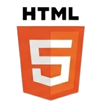
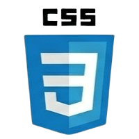
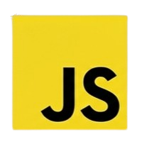

Réalisation d'un site web
Projet IUT2 Grenoble
Pour ce projet on a réaliser un site web pour l'entreprise Sopra stéria à destination d'élève de troisième en recherche de stage.
Compétences
- Travailler en équipe
- Conduire un projet
- Utiliasation du HTML/CSS
- Travailler en équipe
- Conduire un projet
- Utiliasation du HTML/CSS
Objectifs
Les objectis étaient de créer un site web en fonction des besoins du client. On devait adapter le site web principale de l'entreprise pour des collégiens avec des termes plus adapté et des couleurs et un structure plus attractifs tout aillant un site professionel.
Organisation
Le projet était un travail de groupe composé de 4 personnes. Durant le déroulé du projet chaque personne avait une part de travail à faire. Les tâches étaient notament répartie par page du site. Pour ma part j'étaient charger de faire le footer ainsi que la présentation RSE de l'entreprise qui était dédier sur une seule page unique.
Technique et savoir aquis
Au cours du projet du projet, sur la partie technique, j'ai pu mettre en pratique mes savoirs aquis durant mon premier semmestre de BUT en developpement web. Cela m'a permis d'utiliser le HTML/CSS, découvrir quelque fonctionnalité en javaScript.
Mais aussi l'aspect disigne et le structure visuel du site pour répondre au besoin du client. Sur la partie organisationnel, cela m'a permis de comprendre le travail en équipe et la gestion du temps et du charge de travail.


